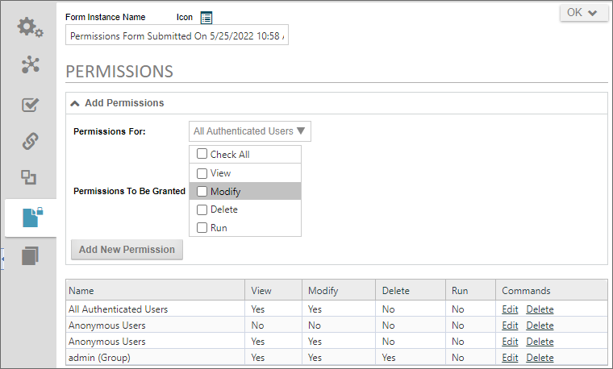

In Process Director, permissions are actually records that are stored in the Process Director database, and each record applies to a different user, group or class of users. Permissions records that are applied to a user or a group are static, which is to say that they always apply to those specific users. Records that apply to a class of users are dynamic, meaning that they can apply to different users at different times.
For instance, one class of users is Process Users. Any users who fall into this class, by virtue of participating in the process, receive the permissions for the class when they are accessing Process Director in the context of that process. At all other times, their permissions revert to the permissions of their group or their user account. So, a user might not have permission, under normal circumstances, to view a particular Form. But, when participating in the process, that same user might receive View and Modify permissions while they are participating. When they are done participating in the process, their permissions automatically revert to the normal permissions applied to their user account.
Anyone who participates in a process, or anyone who has an identity in the system, is a user. Anyone who is identified in Process Director, either through having an internal Process Director user account, or identification through Active Directory, SAML, or Windows Single Sign-on authentication is considered an authenticated user. Anonymous users are users who participate in a process, but whose identity can't be positively authenticated. For instance, you can assign tasks to users who aren't part of your organization, by assigning them a task via email. These are anonymous users who access Process Director through a special URL provided in the email. Process Director can't authenticate these users, and assumes that anyone who accesses a task via the email link is the desired user.
In Process Director, when a new child object is created, it automatically inherits the permissions of its parent. There are different types of objects that are considered children. For instance, in the Content List, a folder is a parent object, while all of the objects contained in the folder, such as definitions for Forms, Process Timelines, Business Rules, etc., are the children objects for that folder. Similarly, every time a new Form is submitted, a new Form instance is created, and the Form instances are the children of the Form definition. Each Form instance, once created, now has its own permissions that apply only to it. Changing the permissions for a specific Form instance won't affect the permissions for any other Form instance.
Quite often, in Process Director, you attach documents to a Form or Process Timeline instance. When you do so, the attached document automatically inherits the permissions of the object instance to which it is attached. In essence, the attachment is treated as a sibling of the instance.
Not all permissions are meaningful for all objects. For instance, there is a Run permission, which is applicable to process objects like Workflows or Process Timelines, but isn't applicable to a document like a Word or PDF attachment. Setting a Word document, therefore, with Run permissions doesn't accomplish anything useful.
When setting permissions, some permissions automatically imply others. For instance, if you give someone Modify permission to an object, you are also granting View permission as well. Similarly, Delete permission also applies View and Modify permission. Applying a more destructive permission always implies—and grants—any less destructive permission. In Process Director, the implied permissions are made explicit, in that, when you check the box to select a more destructive permission, the less destructive permissions will automatically become checked as well, so that you can see the granting of any applicable implied permissions as soon as you select the desired permission.
As mentioned previously, objects automatically inherit the permissions of their parent object. A Form instance inherits the permissions of the Form definition, a document attachment inherits the permissions of the instance to which it is attached, and so forth. You may, however, wish permissions for child objects to be different than their inherited permissions. Process Director contains a Custom Task to address this issue, the Item Actions Custom Task. In the Item Actions Custom Task, you can modify the permissions of attached objects. This does add some extra logic to your process, however, in that you must select when the Custom Task will run, e.g., from a Form or Process Timeline. But, however you choose to do it, you must explicitly change the permissions for the attachment via the Item Actions Custom Task.
When changing permissions via the Custom Task, you may create a permissions rule that conflicts with an existing one. For example, look at the screen shot below:

In this example, Anonymous Users have two different permission rules. One of them grants View and Modify permissions to the form instance, while the second one, added via the Item Actions Custom Task, removes both permissions. Remember, the system will parse the entire permissions list and grant all permissions found. So, in this conflict, the most permissive rule will win, meaning that the View and Modify permissions will be granted, irrespective of the more restrictive permissions rule. So, you must think carefully about how permissions are applied, to avoid such conflicts.
Permissions should be set early on. If you have separate development and production systems, for example, you should have folder permissions already set on the production machine prior to importing any objects from the Development machine. Similarly, when you begin creating a project, you should create a project folder and set permissions on the folder prior to creating the project objects, since new objects always inherit the permissions of the parent object.
The question then arises, "What default permissions should be set on the parent objects?" Sadly there's no simple answer to this question, though there are general guidelines. You should always be sure to harden the permissions adequately to prevent unauthorized access to the objects, which means setting permissions so that as few people as necessary can access the objects. Commonly, hardening is done on the basis of Lines of business. You may have a parent folder that contains all of your HR processes, for example, and permissions to that folder might be limited to only members of the Human Resources department. Subfolders containing individual projects might be hardened even further, so that only specific sub-groups of the HR personnel can access a specific project. Line of Business hardening is, perhaps, the most common method of determining permissions.
As mentioned previously, permissions don't import to or export from a system. Indeed, permissions are specifically prevented from importing/exporting. Usually, the permissions on a development system are far more permissive than on a production system, if for no other reason than designers/developers shouldn't be able to access many processes, like sensitive financial or human resources processes, in a production environment. Preventing permissions from exporting or importing enables you to set up hardened permissions on the production server, while leaving the development server relatively open to support collaborative design efforts.
User administrators have the ability to replace one user with another. This is useful as people change jobs or leave the organization. When using the Replace User function, user replacement automatically replaces the old user in all of the permissions records with the new user. In other words, the permissions assigned to the old user will be assigned to the replacement user. This is a convenient way to replace a user without having to recreate all of the permissions records for the new user from scratch. User replacement is, essentially, a universal replacement with permissions, just as it is with process participation.
In cases where you'd like users to open and submit a form—even if they don't have permission to view or modify the Form in any other context—you can assign all users to have Run permissions for the Form. After the user submits the Form, all of the regular permissions are applied, so if the user doesn't have Read or Modify permission, they'll no longer be able to see the Form in most cases. The exception is if the user is assigned a task later in the process. Process users are always temporarily granted the minimal permissions level they need to complete a task, so, even users who don't normally have permission to see a Form can open the Form in the context of completing the task. Once the task is complete, regular permissions are, again, applied to limit the user's access.
In addition to permissions, Forms offer another level security, in that you can show or hide controls on a Form by using the visibility properties, or disable controls with the Readonly properties. In both cases you can set conditions the hide or disable Form controls based on the user's identity, or any other evaluable condition. This enables you to hide sensitive data even for users who need to see other portions of the form. This isn't permissions-based, but it does add another level of security, in addition to controlling access to the Form itself.
When setting permissions, the question always arises of where to implement the desired permissions settings, since you can set permissions on any object. As a best practice, you should set permissions at the folder level for Content List objects. When you create or import objects in the folder, the new objects will automatically inherit the permissions of the folder. So, in the case of importing from development to production, if you set the permissions on the parent folder on the production system prior to the import, all of the permissions for the folder will be replicated to the imported children objects automatically.
Finally, you should exercise care when moving a Content List object from one folder to another. When you create an object in a folder, it inherits the folder permissions on creation. Process Director has a Move function that enables you to move objects from one location in the Content List to another. An existing object that is moved from one folder to another will bring its existing permissions with it, rather than overwriting them with the permissions of the folder to which it is moved. So, when moving objects to a different folder, you must go to the new folder's permissions list and click one of the Replicate Current Permissions buttons to overwrite the existing permissions of the moved object with the permissions of the new parent folder. Alternatively, instead of moving the object, you can export and reimport it to a new location, as exporting does remove all permissions from the object. In most cases, though, it is probably easier to simply move the object, then replicate the parent folder's permissions.
No user account in a production version of Process Director should have delete permissions on any object, nor should any user account in Production be designated as a partition administrator. The only account that should have delete permissions, or be designated as a partition administrator, is a built-in administrative account. No one should ever log into this account unless they are specifically doing so to delete items from the Content List. You may wish to have a delete-enabled administrative account for each user to whom you wish to give delete permissions, in order to track specific users who might delete objects, but these accounts should not be the accounts the users regularly use to log into the production system.
Deleting an object definition from the Content List automatically deletes all instances of that objects. Deleting any Content List object is a permanent action. There is no "undo". Objects deleted from the Process Director database are gone forever. The only remediation for deleting an object and/or its instances is to restore the database from the most recent backup.
For this reason, delete permission on production systems should be very tightly controlled. No one should be able to delete any Content List object when logged in using their regular identity. Force users to log into specific administrative accounts to delete any Content List object from a production system.
By default, all permissions in Process Director are permit-style permissions, which means that users are denied access to objects unless they are specifically permitted to see the objects. The permit-style permissions model adequately hardens Process Director for nearly all purposes.
There are a limited number of use cases that might require the denial model. For example, you can’t deny a user who is otherwise included in a permitted group without deny permissions. So, in a law office, you might want to bar one of the attorneys from participating in a specific case because of a conflict of interest. Deny permissions would be required to prevent the attorney from viewing the objects that are included in that case instance. Use cases like this should be rare, however.
Process Director can implement the denial model by setting the fEnableDenyPermissions custom variable to true in the custom vars file. Implementing the denial model isn't cost free, however, because it requires the system to perform additional permissions checks every time a user opens an object. This may not be noticeable when opening a form, but it will make Knowledge Views run perceptibly slower. Unless you have a specific use case for implementing denial permissions, you shouldn't implement the denial model.